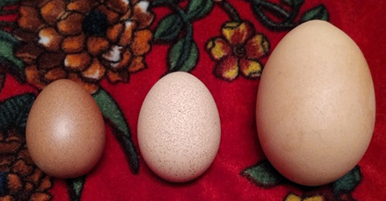

ကွဲကွဲပြားပြား မသိသူများအတွက် တောကြက်ဥ၊ အိမ်ကြက်ဥ နဲ့ စီပီ ကြက်ဥတို့ အကြောင်း

တောကြက်ဥ မမြင်ဖူးသူတွေအတွက် တောကြက်ဥ အိမ်ကြက်ဥ CP ကြက်ဥယှဉ်ပြထားတာပါ….ရောင်းရန်မဟုတ်ပါ…..နောက်အလျှင်းသင့်လျှင် ရေကြက်ဥ၊ ရေဘဲဥ၊ ဒင်ကျီးဥနှင့် ဟင်္သာဥများ ရှာဖွေတင်ပြပေးပါမည်။
တောကြက်ဥ…….တောစပ် တွင်တွေ့ရလေ့ရှိသည်။ အပင်ခပ်လတ်လတ်ကိုင်းခြုံ ဆူးခြုံများရှိ အသိုက်များတွင် တွေ့ရသည်။ တစ်လုံးမှစ၍ အများဆုံး ၅လုံးခန့်အထိသာ တွေ့ရတတ်သည်။ ရှားပါး၍ဆေးဖက်ဝင်သည်ဟုဆိုကြ၍ တရုတ်သမားတော် များအဝယ်များသည်။ ယခင်ကပေါများသော်လည်း လက်ရှိ၌ ရှားပါးနေပြီဖြစ်သည်။
တစ်လုံးလျှင် ၂၅၀၀ ကျပ်ခန့်အထိပေါက်ဈေး ရှိသည်။ တောကြက်ဥကို ဆန်အရက်ဖြင့် ဖျော်သောက်ပါက အမျိုးသမီးများ မီးယပ်သွေးဆုံးကိုင်ခြင်း ကိုယ်ဝန်ဆိပ်တက်ခြင်းများသက်သာပျောက်ကင်းစေသည်။ တရုတ်ရိုးရာအားတိုးဆေးများတွင် ထည့်သွင်းဖော်စပ်ကြသည်။
အိမ်ကြက်ဥ………သဘာဝအတိုင်းလွှတ်ကျောင်း မွေးမြူထားသည့်ကြက်မများမှ ဥသောအကောင့်ပေါက်မည့်ဥ ဖြစ်သည်။မဒမ်းများမှ ဥသောလေဥသည် တန်ဖိုးမရှိ ဆေးဖက်မဝင်ပါ။ အိမ်ကြက်ဥသည် ထွေထွေထူးထူး ပြောစရာမရှိအောင် မြန်မာ တို့နှင့်ရင်းနှီးပြီးသားပင် ဖြစ်သည်။ အိမ်ကြက်ဥတွင် စစ်တကောင်းကြက်ဥ၊ ညောင်ကန်ကြက်၊ တိုက်ကြက်ဥ နှင့် တိန်ညင်ကြက်ဥ ဟူ၍ အမျိုးအစားကွဲပြားသည်။ တစ်လုံးလျှင် ၅၀၀ ကျပ်ခန့်အထိပေါက်ဈေးရှိသည်။ အရက်နာကျသူတွေအတွက် အိမ်ကြက်ဥ နှင့်သံပုရာသီးဖျော်သောက်ခြင်း၊ အမျိုးသားများအတွက် အိမ်ကြက်ဥ၊ ဖီးကြမ်းနှင့် ပျားရည်ခေါက်စားခြင်း စသည် တို့ဖြင့်လက်ရှိ၌အသုံးပြုကြသည်။
မွေးမြူရေးကြက်ဥ အကြောင်းကတော့ မပြောတော့ပါဘူး။
Source-ဖိုးသူတော်